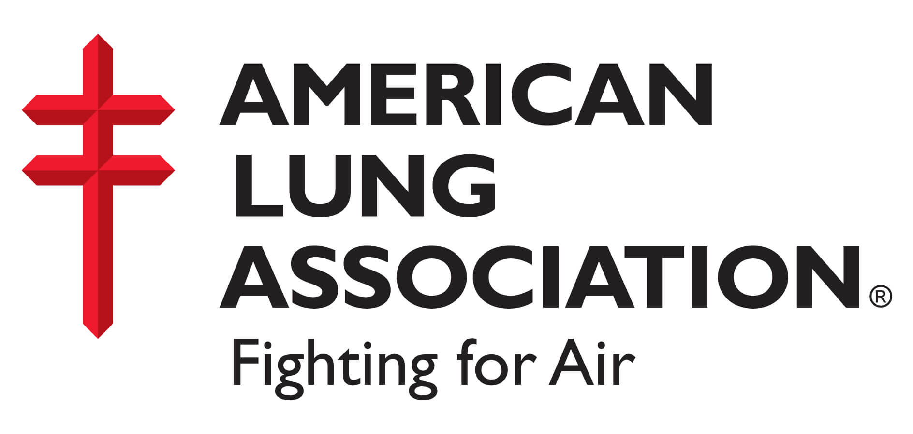
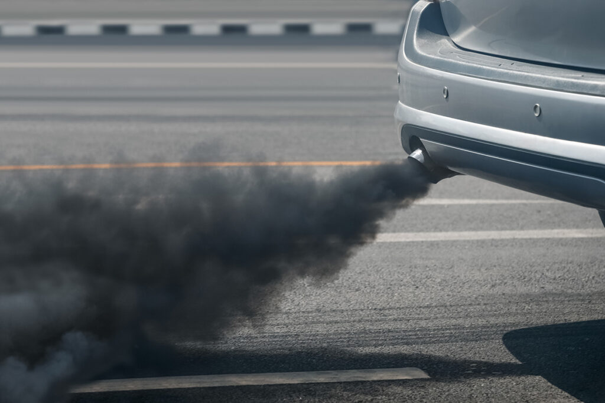

Over 10,000 lives could be saved with a transition to electric vehicles by 2050
Swapping gas for zero-emission vehicles would also lead to 2.8m fewer asthma attacks and avoid 13.4m sick days
A speedy nationwide transition to electric vehicles powered by renewable energy would save more than 100,000 American lives and $1.2tn in public health costs over the next three decades, according to a new report.
Analysis by the American Lung Association highlights the public health damage caused by the world’s dependence on dirty fossil fuels, and provides a glimpse into a greener, healthier future – should political leaders decide to act.
According to the report, swapping gas vehicles for zero-emission new cars and trucks in the US would lead to 110,000 fewer deaths, 2.8m fewer asthma attacks and avoid 13.4m sick days by 2050.
"Transitioning to zero emissions and clean renewable energy is urgent."
The shift would lead to a 92% fall in greenhouse gases by 2050, generating $1.7tn in climate benefits by protecting ecosystems, agriculture, infrastructure from rising sea levels and catastrophic weather events including drought and floods.
Overall, communities of color and low-income neighborhoods would reap the biggest benefits from zero-emission technologies as they currently suffer disproportionately from air pollution and climate disasters, the study says.
The calculations are based on transitioning to 100% electric cars sales by 2035 and 100% electric trucks by 2040, as well as ditching dirty fossil fuels for 100% renewable energy sources such as solar, wind, hydroelectric and nuclear by 2035.

However, given political polarization in the US and a lack of political urgency, it seems highly unlikely that oil and gas companies will stop drilling or that American car dealers will be selling only electric cars by 2035.
Joe Biden’s Build Back Better (BBB) legislation, which includes historic funds for climate initiatives, has failed to move through the Senate due to stonewalling by the Republicans and the conservative Democrat Joe Manchin, the fossil-fuel friendly senator from West Virginia.
But the ALA report details the widespread health benefits that could be achieved if political leaders prioritized climate action over corporate profits.
“The current rising gas and energy prices are a symptom of our addiction to fossil fuels. But outside the economic pain, there’s significant public health pain caused by our addiction to fossil fuels. Transitioning to zero-emission technologies and energy depends on strong political leadership and investments, in order to get the potential health benefits off the page and into the real world,” said Will Barrett, author of Zeroing in on Healthy Air.
The scientific evidence is unequivocal. Any further delay in concerted global action to tackle the climate crisis will miss a rapidly closing window to secure a livable future, according to the Intergovernmental Panel on Climate Change (IPCC).
In the US, transportation and energy are the biggest contributors to greenhouse gases and toxic air.
At least four in 10 Americans – more than 135 million people – live in communities affected by unhealthy levels of air pollution which increase the risk of asthma attacks, strokes, lung cancer, heart attacks, impaired cognitive functioning, premature births and premature death.
The greatest direct health risks are faced by those living close to highways, ports, rail yards, refineries, drilling sites, pipelines and power plants – who are disproportionately communities of color and low-income households. These health burdens are due to decades of inequitable land use policies and systemic racism.
“Zero-emission transportation is a win-win for public health.”
According to the ALA, a shift to zero-emission technologies compared with business as usual would lead to a 78% reduction in Volatile Organic Compounds (VOCs) – which can cause difficulty breathing, nausea, damage to the central nervous system and cancer. Nitrogen oxides (NOx), which are associated with increased ER visits and hospitalizations with asthma, could fall by 92%. (NOx and VOCs are building blocks for ozone – or smog.)
Fine particle (PM2.5) pollution, which elevates the risk of heart disease, lung cancer and asthma, would drop 61% by 2050.
Every state stands to benefit, with more than half gaining at least $10bn in cumulative public health savings from a range of avoided health impacts like premature deaths, asthma emergencies and sick days. The country’s two most populated states – California and Texas – could save $100bn, while six others – Pennsylvania, Florida, Ohio, New York, Illinois and Michigan – stand to save at least $50bn by 2050. (Hawaii and Alaska were not included.)
The hundred US counties, accounting for about 3% in total, with the highest proportion of people of color could experience about 13% of the cumulative health benefits of the green transport transition.
The impacts of doing nothing are very real.
As a child, Rohan Arora from the Washington DC area would rush to fetch his asthmatic father’s inhaler as he coughed and wheezed, triggered by the air pollution on his journey home from work. “It was almost every day, a hazard of living in a city, and sometimes he needed to go to the hospital. Transitioning to zero emissions and clean renewable energy is urgent,” said Arora, 21.
Heavy-duty vehicles like cargo trucks account for just 6% of the national on-road fleet, but generate 31% of the total greenhouse gases in the transport sector. In short, cars produce more harmful planet-heating gases and air pollutants because there are so many of them on the road, but trucks are by far the more toxic.
BBB legislation earmarks $555bn to tackle the energy and transport sectors through a variety of grants, tax incentives and other policies to boost jobs and technologies, as well as major investments in sustainable vehicles and public transit services.
“Zero-emission transportation is a win-win for public health,” said Harold Wimmer, ALA’s president and CEO.